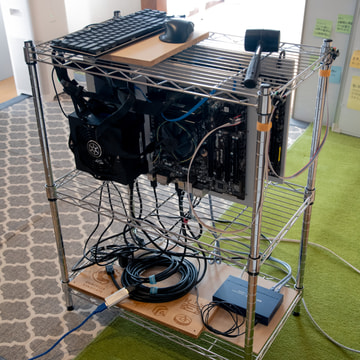
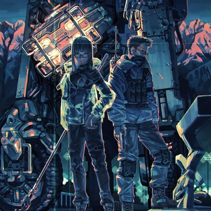

2021
Q3
210711_SP3

doodle
Q2
210506_SP

doodle GIF
210505_SP

doodle
null
-
null
-
Q1
210106_CG

210210_TST

Study
210220
Ancient machine x2
210228

Tateyama
2020
Q4
201101_DEV2

Handheld PC Rev.P (Back)
201101_DEV1

Handheld PC Rev.P (Front)
201228_2DCG
doodle
201213
Dry flower
Q3
200917_FLM

CURE (1997)
200913_FLM

No Country for Old Men (2007)
200701_BHTA

200803_PF

Q2
200616_ADV

200511_BHTA

Test project, Design (Back)
200508_BHTA

Test project, Design (Front)
200423_LoB

Next project
Q1
200216

DIY iPad drawing board
200128_PF

Font inspired by PCB
200111_CT

STM32 board with USB-C Rev.P2
200111_CK

Handheld keyboard Rev.P
2019
Q4
191215_ADV2

Photo based material (Grass)
191215_ADV1

Photo based material (Soil)
191213_ADV

Photo based material (Asphalt)
191109_CT

STM32 board with USB-C Rev.P